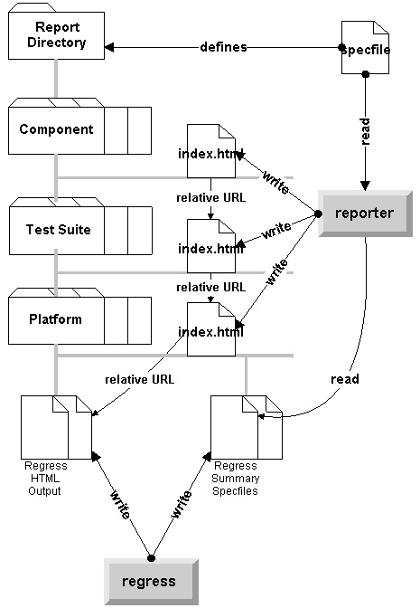

| 
Figure 1: Architecture Overview |
| reporter specfile=<filename> [rptdir=<dirname>]
[debug]
Note: The arguments above are order independent. |
| Error Code | Description |
| NO_ERROR (0) | Program ran to completion and completed its indexing job. |
| ERR_NO_RPTDIR (1) | Program could not open the directory rptdir (as defined in [General] section or passed in on command line). |
| ERR_NO_SPECFILE (2) | Program could not open the specfile passed in on the command line. |
| ERR_NO_GENERAL (3) | Could not locate a [General] section in the specfile. |
| ERR_NO_RPTDIR (4) | Could not locate a rptdir= line in the [General] section. Only if rptdir not passed in on the command line. |
| ERR_NO_COMPONENT (5) | Specification file does not contain a [Component] section. |
| ERR_NO_TESTSUITE (6) | Specification file does not contain a [TestSuite] section. |
| ERR_NO_PLATFORM (7) | Specification file does not contain a [Platform] section. |
| ERR_IDX_NOWRITE (8) | Failed to write (or over-write) one of the index.html files. |
| ERR_USAGE (9) | Provided an invalid or undefined argument. See usage. |
| ERR_BADSECTIONS (10) | One of the required fields in one of the sections was missing. |
The following table defines messages which are generated on standard
output (if and only if debug parameter is supplied) to log "soft"
errors -- errors that can be worked around:
| Error Message - reported to standard output | Description |
| Fatal error: One of the required fields (field) in <section name> was not present. | One of the fields required in provide section was missing, see specification., corresponds to the hard error ERR_BADSECTIONS. |
| reporter: Malformed summary file <filename> : could not locate <field> field. | The summary file, identified by <filename> did not conform to the specifiction (see below). |
| reporter: Could not open directory <dirname> defined in section <section name>. | Attempted to open a directory which did not exist. The dirname
variable as composed as follows:
|
| Fatal error: error code = <number> : message | Additionally, all hard errors will be reported, as defined in the table above, to standard output., use for all ERR_ codes defined above that don't have a more specific message defined in this table. |
| reporter: Usage: reporter specfile=<filename> [rptdir=<dirname>] [debug] | Corresponds to ERR_USAGE defined above. |
The following defines the contents of the reporter summary
specification file, as generated by regress:
| Specification File Element | Description of Element |
| [Status] | Is the only block in this specification file |
| mut=description | Defines a description for the module under test |
| mutversion=versionstring | Defines a version string for the collection of tests. It is assumed that each test will execute against this higher level versionstring version, and that the results will be reported against this versionstring. |
| platform=<string> | Defines the platform the tests were run under (e.g., HP UX 1.0, Solaris 2.4.1, etc.) |
| pass=<number> | Number of tests that passed. |
| fail=<number> | Number of tests that failed due to non-zero return codes, timeouts, OR any other abnormality when running the test. |
| knownFail=<number> | Number of tests that were known to fail because a bug number was specified in its regress specfile.TD> |
| malformed=<number> | Number of tests with bad headers (see regress specfile specifications). |
| Section / Field names | Description |
| [General]
rptdir=<directory> [index=filename] |
|
| [Component-name]
desc=<description> version=<version> dirname=<directory name> |
|
| [TestSuite-name]
desc=description component=name dirname=<directory name> |
|
| [Platform-name]
desc=description dirname=<directory name> testsuite-name=yes|no |
|
| enum DirNodeType{ DIRROOT, COMPONENT, TSUITE, PLATFORM, FILE} ;
typedef struct _StatusNode {
typedef struct _DirectoryNode { |
Program logic:
|
/* 1.0 Process specification file */
/* 1.1 Add all component names to DirectoryNode tree */
/* 1.2 Add all test suite names to DirectoryNode tree */
/* 1.3 Add all test suite names to DirectoryNode tree */
/* 2.0 Open each of the status nodes, and augment tree with HTML file
objects */
/* 2.1 Select most recent report at the PLATFORM level and store in
tree */
/* 2.2 Calculate suite results */
/* 2.3 Calculate component results */
/* 3.0 Write out all index files at ROOT, COMPONENT, SUITE, and PLATFORM
level */
|
| Level | HTML Format |
| ROOT | <HTML> <HEAD></TITLE></TITLE></HEAD> <BODY> <TABLE> For each component in ROOT { <TR><TD><A HREF="<filename>/<index>">desc</A></TD></TR> } </TABLE> </BODY> </HTML> |
| COMPONENT | <HTML> <HEAD></TITLE></TITLE></HEAD> <BODY> <TABLE> For each suite in component node { <TR><TD><A HREF="<filename>/<index>">desc</A></TD></TR> } </TABLE> </BODY> </HTML> |
| SUITE | <HTML> <HEAD></TITLE></TITLE></HEAD> <BODY> <TABLE> <TR><TD></TD></TR> </TABLE> </BODY> </HTML> |
| PLATFORM | <HTML> <HEAD></TITLE></TITLE></HEAD> <BODY> <TABLE> <TR><TD></TD></TR> </TABLE> </BODY> </HTML> |
| [General]
dirname=/u/zigbert/saw/projects/hardcore/prj-ttools/testing/rptroot [Component-seclib]
[TestSuite-pkcs5]
[TestSuite-crypto]
[Platform=hp10_2]
[Platform=sol2_4]
|